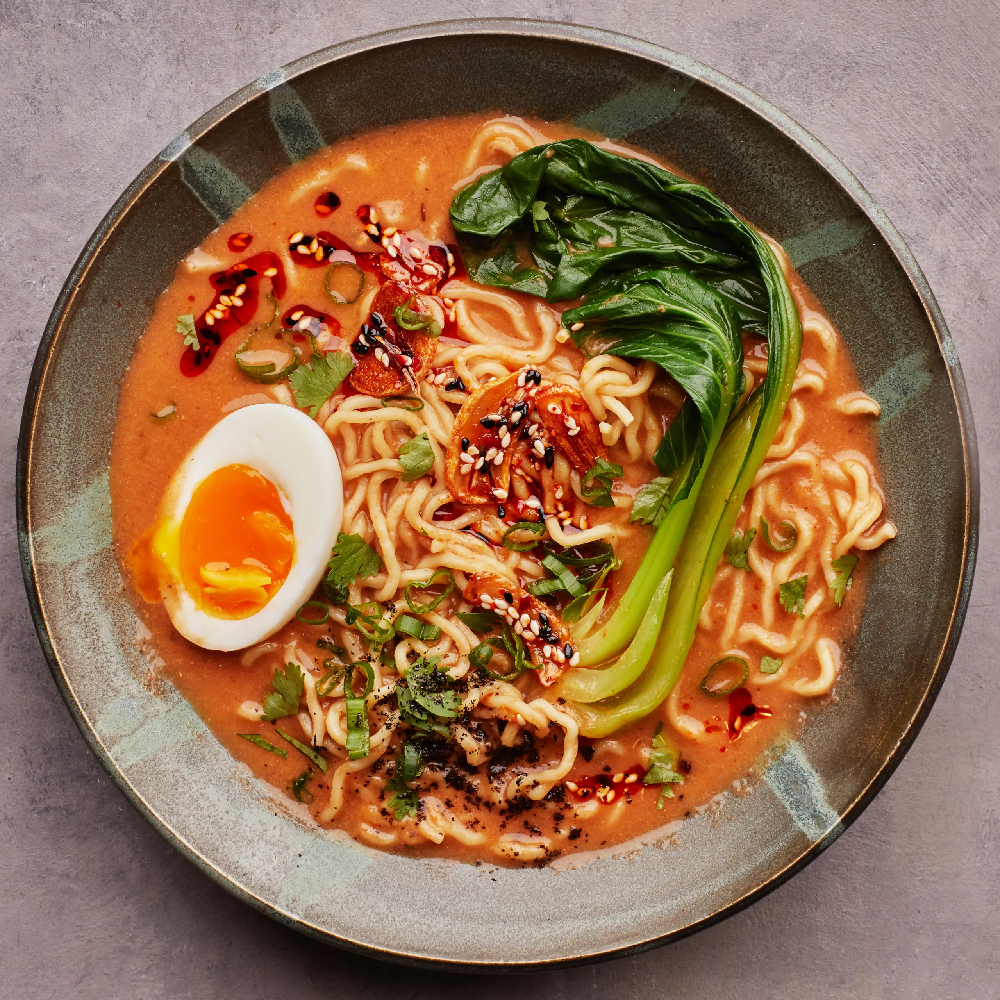

Description
Ramen is a comforting Japanese noodle soup, typically made with a flavorful broth (pork, chicken, or soy-based),
noodles, and a range of toppings like soft-boiled eggs, green onions, and sliced pork. Each region in Japan has its own
ramen style, from the thick, rich tonkotsu of Kyushu to the lighter, soy-flavored varieties of Tokyo.
Ingredients
- Ramen noodles
- Chicken or vegetable broth (base for the soup)
- Soy sauce
- Mirin (optional for sweetness)
- Sliced green onions
- Soft-boiled eggs
- Sliced pork (chashu) or chicken
- Nori sheets
- Fresh garlic and ginger (for extra flavor)
- Sesame oil
- Bean sprouts (optional)
Steps
- Prepare broth: In a pot, combine chicken or vegetable broth with soy sauce and mirin. Add garlic and ginger to taste,
then simmer for about 10-15 minutes.
- Cook the noodles: Cook ramen noodles according to package instructions, then drain and set aside.
- Prepare toppings: Slice the green onions, soft-boil the eggs (boil for 6-7 minutes, then peel), and prepare any
additional toppings like nori or pork slices.
- Assemble: Place noodles in a bowl, ladle the hot broth over, and top with green onions, egg, sliced pork, and any other
desired toppings.
- Serve: Drizzle a little sesame oil on top and enjoy while hot.